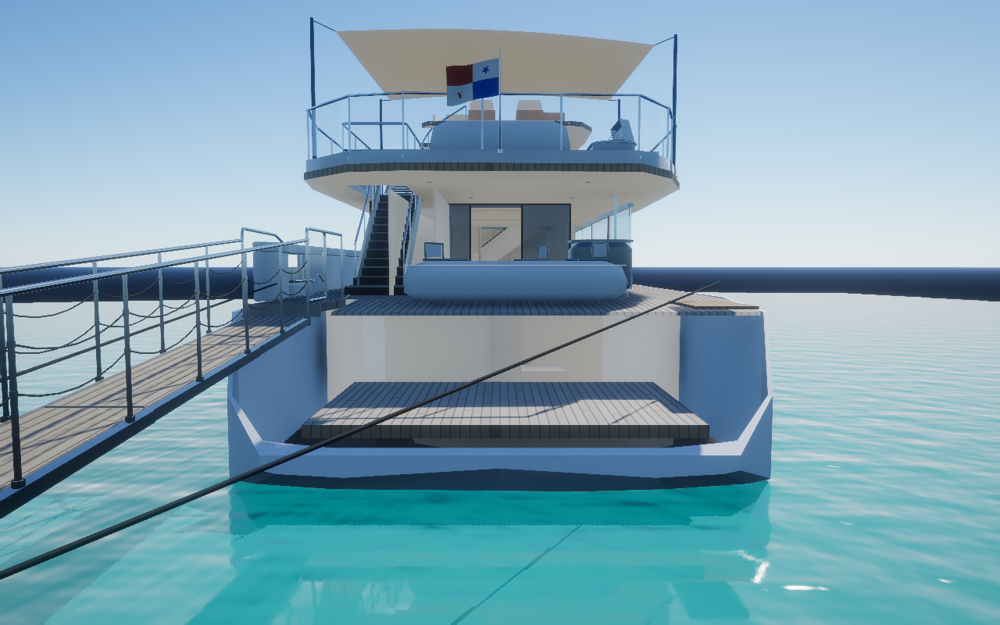
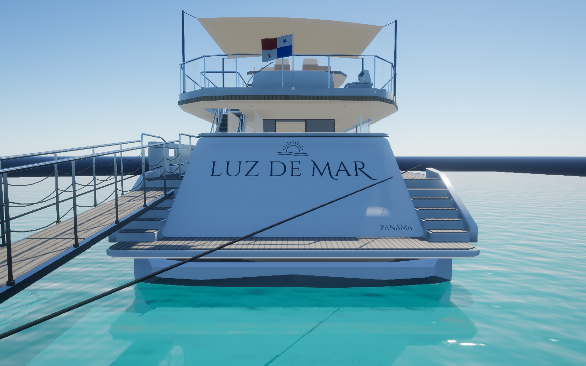
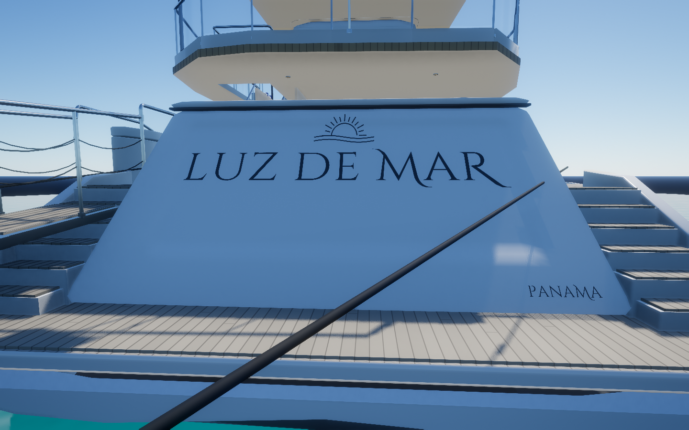
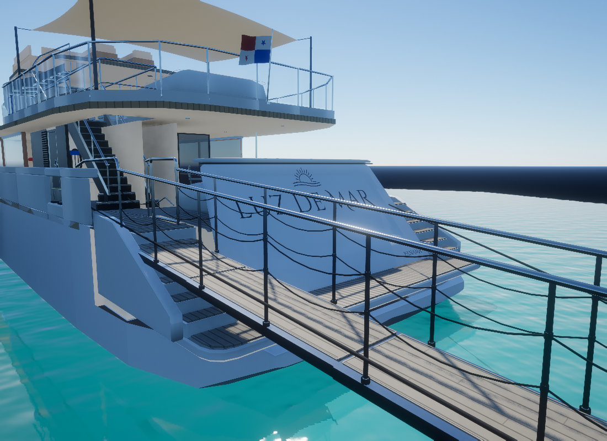
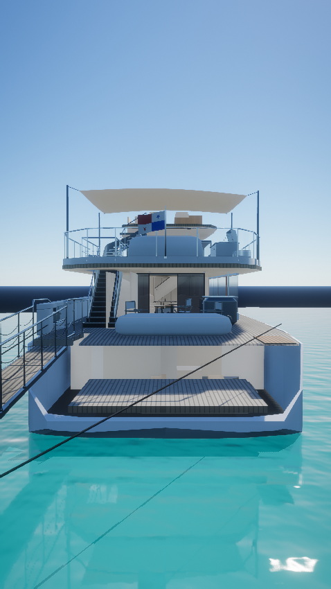
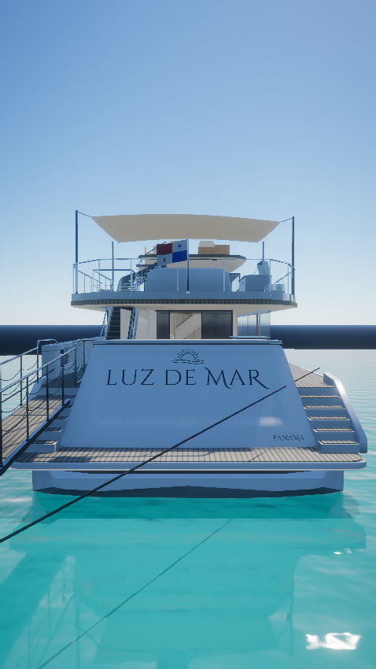

Luz de Mar · r24
La identidad en la popa.
Panel blanco inclinado, bordes suaves, letras romanas oscuras, sol abierto con dos ondas y «PANAMA» en la esquina inferior de estribor. La plataforma y los escalones laterales se ajustan al nuevo conjunto.
Ver la popa en el mapa ↗La rotulación se reconstruyó a partir del acercamiento de popa del video del propietario. El nombre anterior en el costado se retiró.

Antes · popa anterior
Ahora · panel central y escalones
Rotulación · LUZ DE MAR, emblema y PANAMA
Vista lateral · encuentro con plataforma y pasarela
Antes · vista vertical
Ahora · vista verticalDetalle con un coste acotado
| Medida | Cambio |
|---|
| Geometría del yate | +2.98% · 250 kB |
| Triángulos | +5,804 |
| Nuevos grupos de dibujo, texturas o pasadas | 0 |
| Agua rápida, resolución y antialiasing | Sin cambios |
Se comprobaron el soporte de las letras sobre el panel, el casco sumergido, la navegación de acceso y las puertas existentes. Las capturas emplean el modelo, materiales, sombras y antialiasing de producción en una escena de prueba.
El tipo de letra comercial exacto, los códigos de color y las medidas de cada componente no pueden verificarse con el video comprimido: son ajustes fotográficos. La tipografía usa contornos abiertos Cinzel/Cinzel Decorative con licencia SIL OFL. Los escalones de popa se refinan visualmente; este cambio no añade un recorrido a pie a la plataforma de baño. Estas capturas omiten el paisaje del mapa y no constituyen una medición de FPS en un teléfono. Los videos y fotogramas privados no se publican.